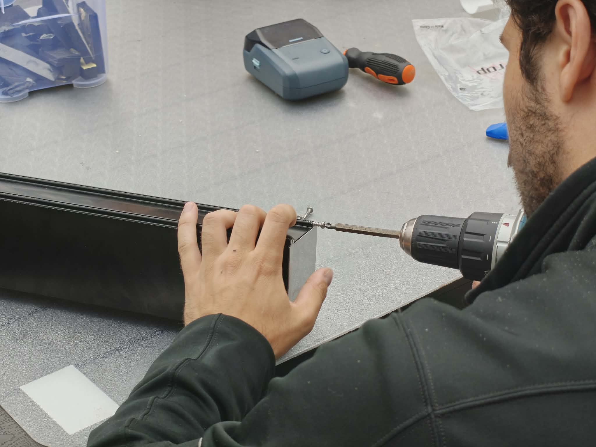
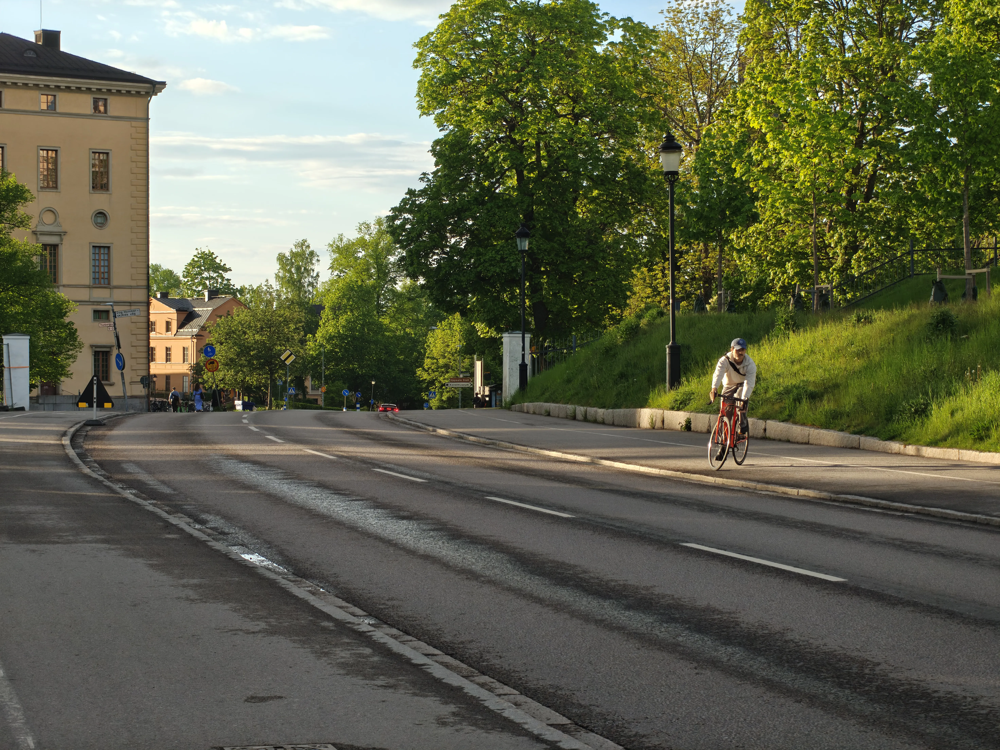

Om Batterilabbet
Batterier som möjliggör framtidens mobilitet
Varför Batterilabbet?
Batterilabbet uppstod ur målet att sätta en ny standard för hur elcykelbatterier repareras i Sverige med säkerhet, transparens och korrekt hantering som grund.
Vilka är vi?
Vi är fyra ingenjörsstudenter från Uppsala universitet med en bakgrund i batteribranschen som sträcker sig tillbaka till 2020 och ett stort intresse för batteriteknik, hållbarhet och smarta lösningar för att underlätta för alla med elcyklar.



Vad gör vi?

Felsökning & Diagnostik
Vi felsöker batterier på flera nivåer genom att bland annat kontrollera BMS (kretskort), laddningskapacitet och kablage.
Diagnostik genomförs innan och efter reparation samt inför avfallsåtervinning för att säkerställa att batteriet ger/givit maximal nytta.
Läs mer om felsökning

Reparation & Underhåll
Vi reparerar batterier genom att ersätta defekta BMS (kretskort), byta kablage och byta celler i batteriet.
Vi underhåller batterier med förebyggande åtgärder såsom att kontrollera BMS (kretskort) och balansera laddningen hos cellerna, så att slitaget fördelas jämnt.
Läs mer om reparation och underhåll

Cirkulär & Säker hantering
Vi främjar cirkuläritet inom batteriteknik genom att återvinna så mycket som möjligt av ett gammalt batteri.
Det vi inte kan återvinna, hanterar vi korrekt och lämnar in som avfall enligt Naturvårdsverkets standard.
Läs mer om cirkularitet och återvinning
Batterilabbet
För framtidens mobilitet
Varför gör vi det här?
Vårt mål
Vårt mål är att skapa en transparent, pålitlig och säker standard för hur batterier repareras på ett hållbart sätt. Vi vill förlänga den effektiva livslängden hos elcyklar och på så sätt möjliggöra för hållbar och effektiv mobilitet genom ökningen i antalet elcyklar.
Vår vision
Vår vision är att förlänga livet på varje elcykelbatteri för att bidra till ett mer hållbart samhälle. Vi tror på att återvinna och förbättra elcykelbatterier så att deras livslängd blir längre och prestanda blir bättre. Detta reducerar farligt avfall och är samtidigt bra för plånboken. Vi tror på att fler väljer elcykel över bil i framtidens Sverige för vardagsresor och pendling till jobbet. Då blir det än viktigare att batterierna tas omhand på rätt sätt.

Varför välja oss?
Vi tror inte på massproduktion utan själ. Därför byggs alla våra batteripack för hand på plats i våra verkstäder i Uppsala och Tyresö. För oss är säkerhet och prestanda två sidor av samma mynt.